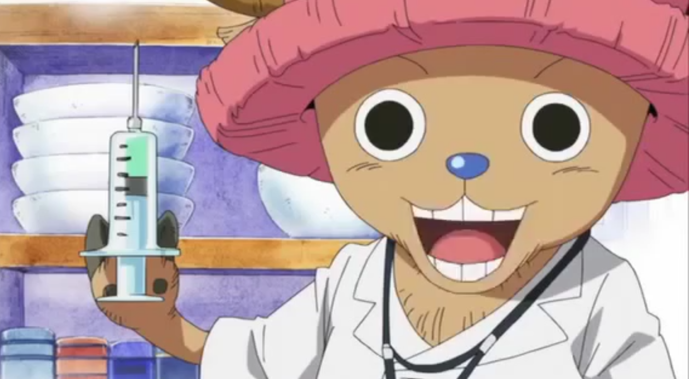

About Chopper

Chopper about to administer medicine
- Chopper ate the human-human fruit and gained human-like characteristics
- He learnt medicine from his mentors: Kureha and Hiriluk
- He joined the strawhat crew to travel the world with his friends and learn about medicine
- Chopper can use rumble balls to enhance his abilities in various ways
Friends of Chopper
Chopper's friends are also his crew: the strawhat pirates. To find out more about his companions click on the links below
Click on the link below to read more about Chopper